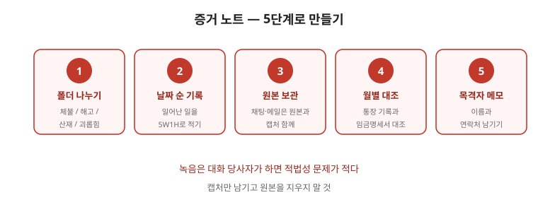

부당노동행위는 “마음”이 아니라 행위와 시점으로 판단됩니다. 언제 무슨 일이 있었는지가 사실관계의 전부입니다. 이 글은 금지 행위 유형부터 증거 정리·구제신청·인정 이후 추적까지 순서대로 정리한 안내입니다. 인정 여부는 사실관계와 시점에 좌우되므로 마지막 점검표까지 읽고 초기부터 상급단체·전문가와 함께 대응하세요.

한눈에 보는 표 — 금지 행위 5유형
| 유형 | 내용 | 확인 자료 |
|---|---|---|
| 불이익 처우 | 가입·활동을 이유로 인사·평가 불이익 | 가입일·활동일·인사발령일 대조 |
| 지배·개입 | 조합 운영에 개입, 대항조직 지원 | 회의 자료·메신저·공지문 |
| 교섭 거부·지연 | 정당한 교섭 요구에 불응 | 교섭 요구서·재촉 기록 |
| 대표자 아닌 자와 협약 | 대표자 아닌 사람과 협약 체결 | 협약서·서명자 자격 |
| 보복적 해고 | 조합 활동을 이유로 한 해고·계약거절 | 활동 기록·해고 통보서 |
1. 법이 금지하는 행위 유형
- 조합 가입·탈퇴·활동을 이유로 한 불이익 처우, 조합 운영에 대한 지배·개입, 교섭 거부·지연 등이 대표적인 유형입니다.
- 실제로 가장 다툼이 되는 것은 '불이익 처우'와 '지배·개입'이다. 인사 발령과 조합 탄압이 겹치는 경우가 많습니다.
2. 무엇을 증거로 남기나 — 시점 대조가 핵심
- 가입 시점, 활동 내역, 불이익이 발생한 시점을 시간순으로 나열하세요. 두 사건의 간격이 판단의 핵심입니다.
- 회의 자료·메신저·평가서·인사발령문을 모으세요. 회사가 제시한 사유와 실제 정황이 맞지 않는 부분을 정리하세요.
3. 구제신청
- 노동위원회에 구제신청을 할 수 있고, 신청 기간 제한이 있으므로 사건을 인지한 즉시 기한을 확인하세요.
- 구제신청과 별개로 형사 고발, 노동청 진정을 병행할 수 있다. 순서와 자료 공유 방법을 정해 두면 중복 작업이 줄어듭니다.
4. 인정된 뒤 — 이행 추적
- 구제 명령이 내려지면 원상회복·부당이득 반환 등이 문제 됩니다. 명령 내용을 조합 차원에서 추적해야 합니다.
- 회사가 행정소송으로 다투는 경우가 흔합니다. 소송 기간 동안 조합원 처우가 다시 나빠지지 않는지 기록을 이어가세요.
자주 틀리는 3가지
- “마음이 문제다” — 행위와 시점으로 판단됩니다. 날짜 대조표가 핵심입니다.
- “인사는 회사 권한이다” — 조합 활동 시점과 맞물리면 별개 판단이 필요합니다.
- “명령이 나오면 자동 이행된다” — 조합이 이행 여부를 추적하고 필요한 절차를 검토해야 합니다.
현장 체크리스트
- □ 가입·활동 시점을 날짜로 정리했는가
- □ 불이익 발생 시점을 대조표로 만들었는가
- □ 회사가 제시한 사유와 실제 정황의 불일치를 적었는가
- □ 구제신청 기간을 확인했는가
- □ 명령 이행 여부를 추적하고 있는가
자주 묻는 질문
- Q. 조합 가입 후 인사평가가 떨어졌습니다. — A. 시점 대조표를 만들고 이전 평가·평가 기준과 비교하세요. 평가서와 통보 일자를 보관하세요.
- Q. 회사가 조합 대신 다른 모임을 지원합니다. — A. 지배·개입 유형에 해당할 수 있습니다. 지원 내역·공지문·회의 자료를 보관하세요.
- Q. 교섭 요구에 답이 없습니다. — A. 재촉 기록을 남기고 지연·거부로 다툴 수 있는지 상급단체와 상담하세요.
- Q. 조합원 다수가 같은 불이익을 받았습니다. — A. 개별 기록을 모아 사업장 단위 문제로 제기할 수 있는지 검토하세요.
근거와 원문
이 글은 2026-09-19 기준 일반 안내입니다. 부당노동행위 인정 여부는 사실관계와 시점에 좌우되므로 초기부터 상급단체·관할 노동위원회·노무사·변호사와 함께 대응하세요. 법률 자문이 아닙니다.